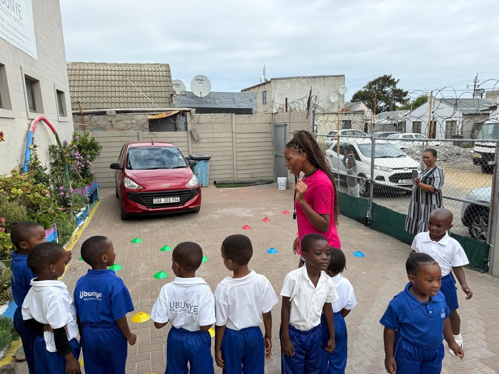
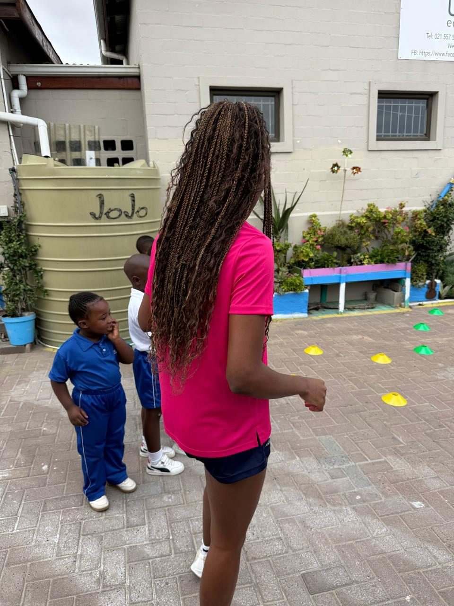

On 25 March 2026, Netball in a Box held its first official outreach visit, at Ubunye Edu Care Centre in Dunoon. It was a very special day. We were joined by FNB Care volunteers Riana Prinsloo and Linda Ndzandza, who were geared up and ready to serve the community alongside us.

With the help of navigation tools and some friendly directions from the Dunoon community, we found Ubunye Edu Care Centre, a hidden gem in the heart of the township. Principal Esther Cupido and the Ubunye family welcomed us warmly. We were given a tour of the centre straight away and met more of the team along the way.
Our newly formed team then began setting up the netball stations. It brought together Dr Freda Kemp and me from District Sport League (DSL), Riana Prinsloo and Linda Ndzandza from FNB, and Esther Cupido and the class teachers, whom I like to think of as superheroes. Setting up was the easy part. The real test was still to come.
Ubunye may look small from the outside, but it is home to more children than you might expect. With the help of our superhero teachers, we ran three separate sessions so that every child could take part. Esther introduced us to the children, and the fun began.
Dunoon is a large, vibrant township on the northern outskirts of Cape Town, just east of Table View. Many languages are spoken there, and it was amusing to watch Dr Kemp, an Afrikaans speaker, coach learners who speak only isiXhosa. It was even more inspiring to see the game of netball break down that barrier. There is something about a ball and the spirit of sport that brings people together.
During the sessions, we taught the children the basic skills of netball: how to hold the ball, pass and catch, change direction and improve their reaction time. The most popular skill of the day was learning how to shoot a netball into the net.

What the Ubunye Community Said
“Thank you so much for organising this for our children. We appreciate it so much. And to have professionals teaching our children, we are so honoured.”
— Esther Cupido, Principal, Ubunye Edu Care Centre
For more information, contact:
Dr. Freda Kemp, Director
Email: fkemp64@gmail.com
Phone: 082 523 0785